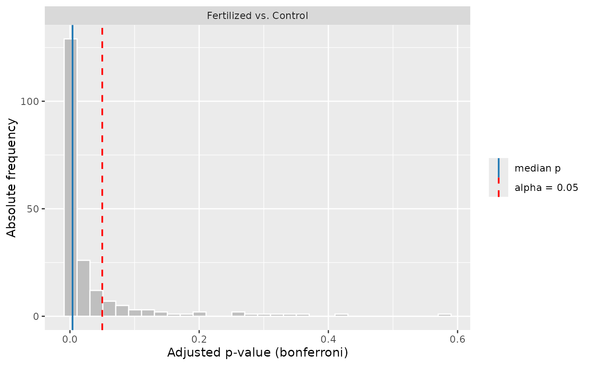
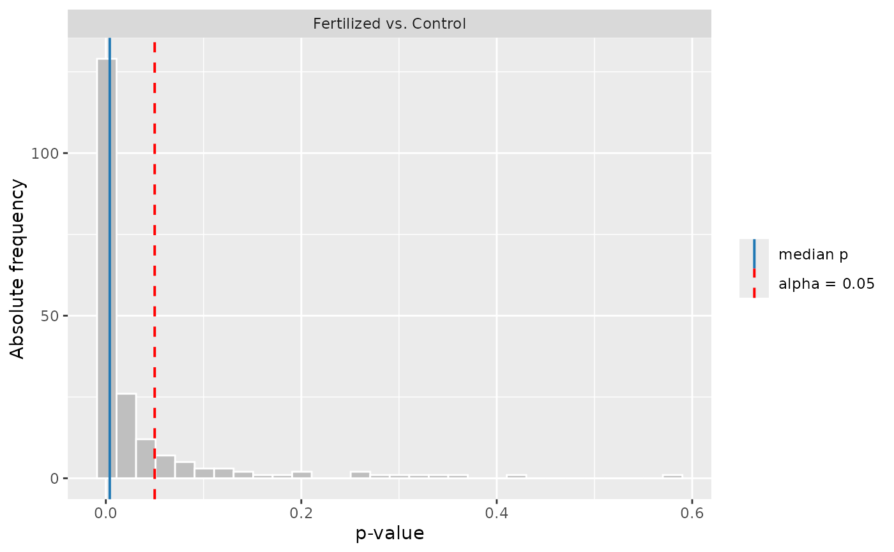
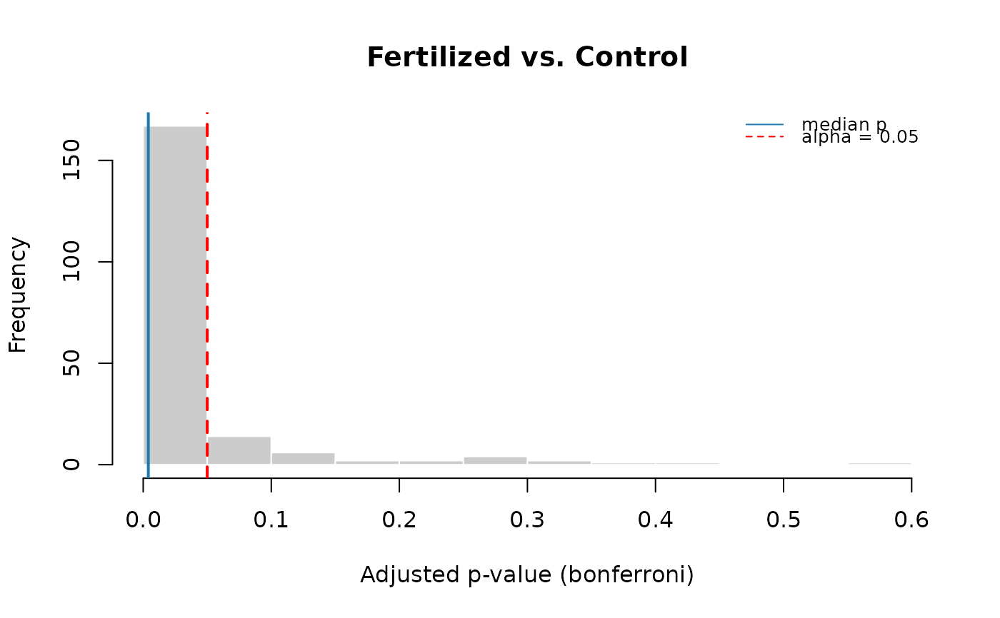

Produces one histogram per pairwise comparison showing the empirical distribution of permutation *p*-values across the `n_s` sampling runs of an [`ofemt_result`]. Two reference lines are drawn on each panel: a solid line at the **median** of the distribution — the value [ofemt()] reports for that comparison — and a dashed line at the significance threshold **alpha**.
Arguments
- results
An object of class `ofemt_result`, typically obtained from [ofemt()]. Must contain `perm_runs` and `params$alpha`.
- which
Which p-values to plot. `"auto"` (the default) uses the multiplicity-adjusted values whenever the analysis was run with `p_adjust_method != "none"`, and the raw values otherwise. `"adjusted"` and `"raw"` force one or the other. The adjustment is applied within each run before the histogram is built, so the median line coincides with the `p_adj` reported in the `ANOVA permutation test` table.
- bins
Number of histogram bins. Default 30.
- engine
Which graphics system to draw with, `"ggplot2"` (the default) or `"base"`. If **ggplot2** is not installed the function falls back to `"base"` with a message.
Examples
res <- ofemt(ofe_f2, y = "Yield_tn", x = "Treatment", cellsize = 9,
p_adjust_method = "bonferroni")
#> `grid` not provided: building one internally via `make_ofe_grid()`. Pass a pre-built `ofe_grid` to inspect or reuse the selection.
plot_pvalue_hist(res) # adjusted p-values

plot_pvalue_hist(res, which = "raw")

plot_pvalue_hist(res, engine = "base")
